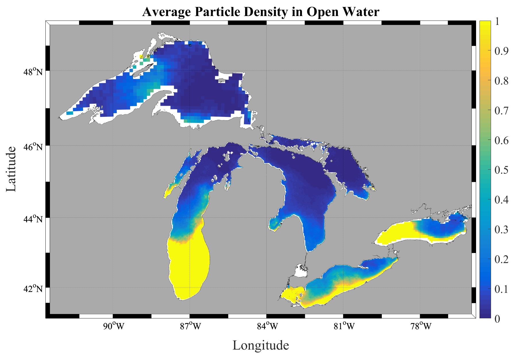
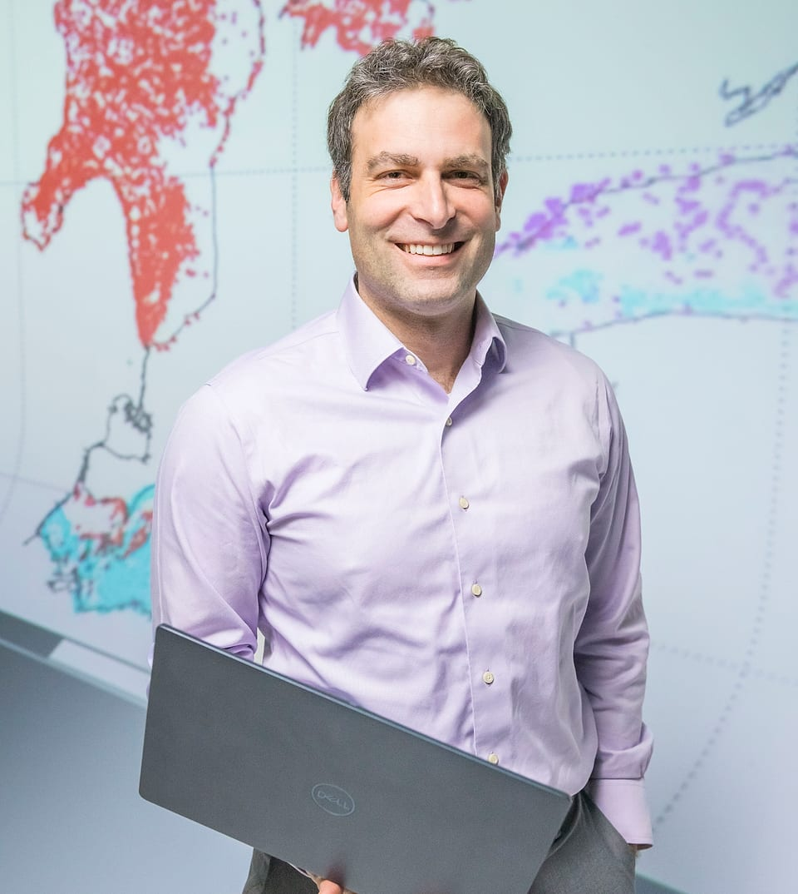
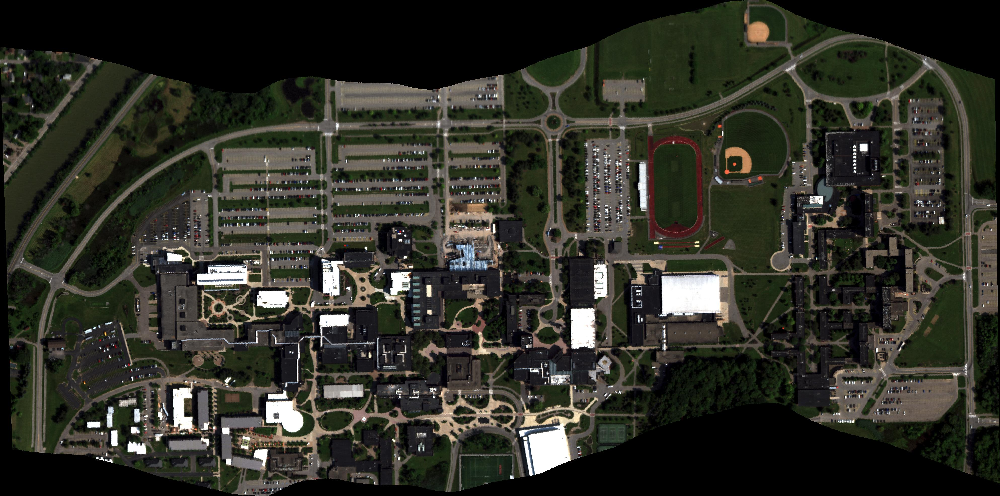

Plastic pollution: fate and transport
Particle-transport models driven by lake and ocean currents estimate where plastic goes, from the first full budget for the Great Lakes to global marine reservoirs.
Read morePlastic pollution fate and transportHydrodynamicsData assimilation
I build mathematical models to understand where plastic pollution goes in lakes and oceans, and develop data-assimilation methods that blend those models with observations. The same tools reach into lake and ocean hydrodynamics, hyperspectral remote sensing, and the electrical dynamics of the heart.


Particle-transport models driven by lake and ocean currents estimate where plastic goes, from the first full budget for the Great Lakes to global marine reservoirs.
Read moreEnsemble methods that blend numerical models with observations, applied to lakes and estuaries, the Martian atmosphere, and the electrical dynamics of the heart.
Read more
Hyperspectral imaging to detect and track vehicles from the air, including the open AeroRIT benchmark now used across the imaging community.
Read moreShows how particle settling skews microplastic sampling, and how that bias can be turned into information.
Global simulations showing most floating plastic stays trapped near coastlines rather than drifting to open-ocean garbage patches.
The first mass estimates of plastic throughout the water column and on the bottom of any of the Great Lakes.
An openly released benchmark dataset now used across the hyperspectral imaging community.
The first full-system plastic budget for the Great Lakes, estimating nearly 10,000 metric tons of plastic entering the lakes each year; widely covered in national media.